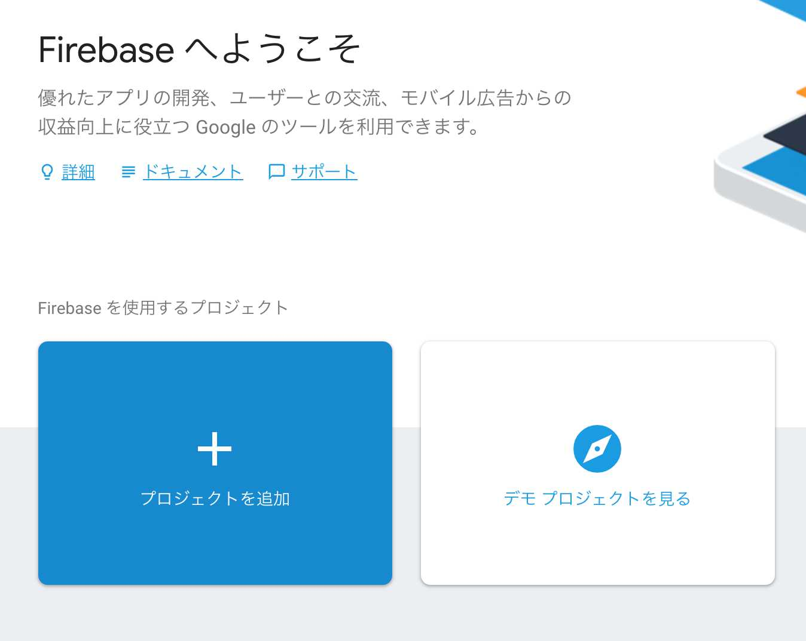
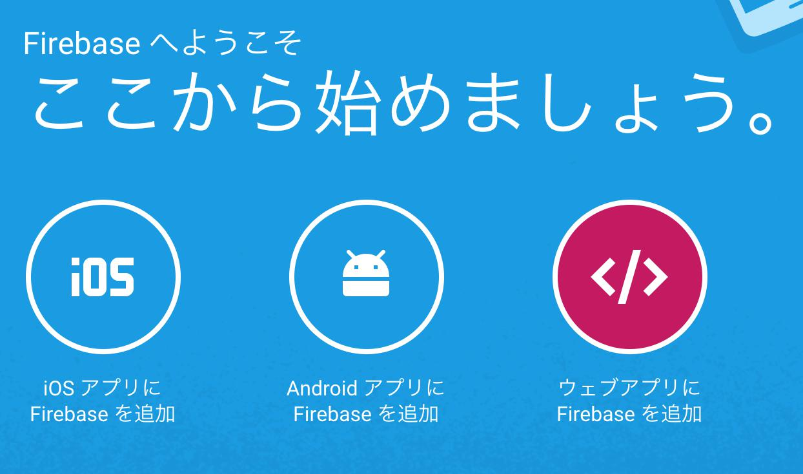
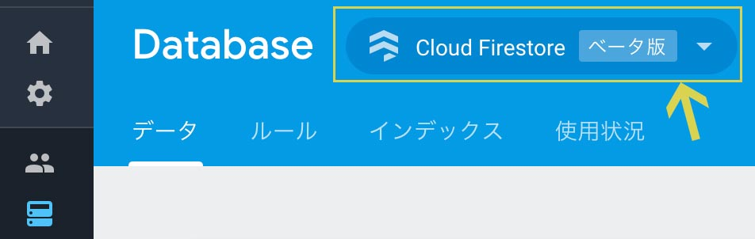
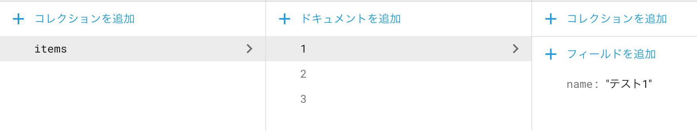

今回はVue.jsのフレームワーク、Nuxt.jsと、firebase各種を用いて小さなサイトの構築を行いました。
各種導入の際に詰まることが多かったので、手順をまとめました。
今回のサンプルソースはこちらです。
Nuxt.jsの導入・表示確認まで
ローカルホストでHelloWorldするまでの手順になるので、Nuxt.jsを導入したことがある方は読み飛ばして構いません。
公式のスクラッチから始めるを参考に導入していきます。package.jsonが作成されていることが前提です。
1 | npm i -S nuxt |
次に/src/pages/index.vueを作成し、下記を記述します。1
2
3<template>
<h1>Hello world!</h1>
</template>
そして、/src配下が認識されるようnuxt.config.js を作成し、下記を記述します。
（ルートにディレクトリを掘る場合はこの設定はしなくても問題ありません。）
1
2
3
4//nuxt.config.js
module.exports = {
srcDir: 'src/'
}
package.jsonには
1
"dev": "nuxt"
を追加しておきます。
そして、npm run devで起動します。
http://localhost:3000 にアクセスすると「Hello world!」 が表示されたかと思います。
Nuxt.jsの導入確認は以上です。
firebase側の設定
firebaseのAPIKeyを取得する
firestore導入作業を始める前に、firebaseでプロジェクトを新規作成し、APIKeyを入手しておいてください。
左側青色の「プロジェクトを追加」でプロジェクトを作成し、

APIKeyは、コンソール画面の「ウェブアプリにfirebaseを追加」 から取得できます。

更に、firestoreを有効にしておきます。

firestoreにデータを登録する
作成したfirebaseのプロジェクトにデータを登録します。
今回は分かりやすいようにitemコレクションの中に、nameフィールドを持ったドキュメントを3つ登録しました。

データの登録方法については今回省きます。
firestoreの導入
次にfiresotreの導入をしていきます。
1 | npm i -S firebase |
firestoreの設定ファイルを追加します。
複数ファイル必要なので、一つずつ。
firestore.rulesを作成し、下記を記述します。
これはFirestoreのデータにアクセスできるかどうかのルールを記述するものですが、今回はただのサンプルなので全てのデータに対して読み書きが自由にできるようになっています。1
2
3
4
5
6
7
8// /firestore.rules
service cloud.firestore {
match /databases/{database}/documents {
match /{document=**} {
allow read, write;
}
}
}
firestore.indexes.jsonを作成し、下記を記述します。
これはfirestoreのインデックスを管理するものですが、今回は指定なしのまま進めます。
1
2
3
4// /firestore.indexes.json
{
"indexes": []
}
そして、前手順で作った２つの設定ファイルをを読み込ませるためのfirebase.jsonを作成し、下記を記述します。
とはいえ今回それぞれの設定内容が簡単になっているのであまり考えなくても良いのですが。
1 | // /firebase.json |
そして、jsとの結合部分を記述します。
plugins配下にfirebaseInit.jsを作成し、下記を記述します。(ファイル名は自由です)1
2
3
4
5
6
7
8
9
10
11// /src/plugins/firebaseInit.js
import firebase from 'firebase'
import 'firebase/firestore'
import config from './../util/firebaseConfig'
const firebaseApp = firebase.initializeApp(config)
const settings = { timestampsInSnapshots: true }
const firestore = firebaseApp.firestore()
firestore.settings(settings)
export default (!firebase.apps.length ? firebase.app() : firestore)
APIKeyなどはfirebaseConfig.jsを作成し、別ファイルで管理するようにしました。
ディレクトリ・ファイル名は自由ですし、気にならない方はfirebaseInit.jsに書いても動作的には問題ないです。1
2
3
4
5
6
7// /src/util/firebaseConfig.js
export default {
apiKey: '',
authDomain: '',
databaseURL: '',
projectId: ''
}
事前に用意しておいたAPIKeyはここに貼り付けておきます。
プッシュしないように気をつけて下さい。
そして、先程作成したプラグインが使えるようにnuxt.config.jsに設定を追記します。1
2
3
4
5// /nuxt.config.js
module.exports = {
srcDir: 'src/',
plugins: [{ src: '~/plugins/firebaseInit' }]
}
storeの設定
store配下にindex.jsを作成し、処理を記述していきます。
Nuxt.jsではstoreを作成する時にクラシックモード(index.jsのみ)とモジュールモード(store配下のjsがモジュールに変換される)がありますが、今回は記述量が少ないのでクラシックモードを選択しています。1
2
3
4
5
6
7
8
9
10
11
12
13
14
15
16
17
18
19
20
21
22
23
24
25
26
27
28
29
30
31
32
33
34
35
36
37
38
39
40
41
42
43
44
45// /src/store/index.js
import Vuex from 'vuex'
import {
INIT
} from './types'
import db from '~/plugins/firebaseInit'
const itemRef = db.collection('items')
const initPlugin = store => store.dispatch(INIT)
const store = () =>
new Vuex.Store({
state: {
itemList: []
},
mutations: {
INIT(state, data) {
state.itemList = data
}
},
actions: {
INIT({ commit }) {
itemRef.get().then(res => {
let list = []
res.forEach(doc => {
let data = {
id: doc.id,
name: doc.data().name,
}
list.push(data)
})
commit('INIT', list)
})
}
},
getters: {
getItems: state => {
return state.itemList
}
},
plugins: [initPlugin]
})
export default store
タイプもindex.jsの中に入れても良かったのですが、癖で別ファイル化してます。1
2// /src/store/types.js
export const INIT = 'INIT'
pluginsにinitPluginを設定することで、store初期化時にINITアクションが呼ばれるようになっています。
データの取得は、db.collectionでコレクションを指定して、get()で出来ます。
更新するときはupdate()だったり、非常に分かりやすいです。
vueファイルの設定
Nuxt.jsの導入のHelloWorld表示で使用したvueファイルを変更していきます。
1
2
3
4
5
6
7
8
9
10
11
12
13
14
15
16
17
18<template>
<ul>
<li v-for="(item,index) in init" :key="index">
{{ item.id }}：{{ item.name }}
</li>
</ul>
</template>
<script>
import { mapGetters } from 'vuex'
export default {
computed: {
...mapGetters({
init: 'getItems'
})
}
}
</script>
mapGettersでgetItemsというgetterをinitという名前でマッピングしています。
今回は入れてないのですが、最初はItemsの中身がないので真っ白になってしまいます。
そのため、データの取得が終わるまではローディング画像を出すなりした方が良さそうです。
設定は以上になります。
さっそくnpm run devで確認してみます。
ローカルでもサンプルページのように、登録したデータが表示されていれば正しく設定出来ています。
今回はfirebase Hostingを使ってデプロイしてみました。
実際に作業してみた所感
vueの経験が足りなかったが故に導入が終わるまでは苦労しましたが、記事にして振り返ってみると割と簡単に連携できるのかなという印象でした。
storeの部分を分割して綺麗にしておけばより良さそう。
他には設定ファイルの多さが若干気になりますが、小さいプロジェクトなら問題ないのかなぁ…。
とはいえfirestore＋Hostingの組み合わせがプライベートで勉強するにはとても楽ちんなので、今後どんどん使っていきたいです。
おしまい。